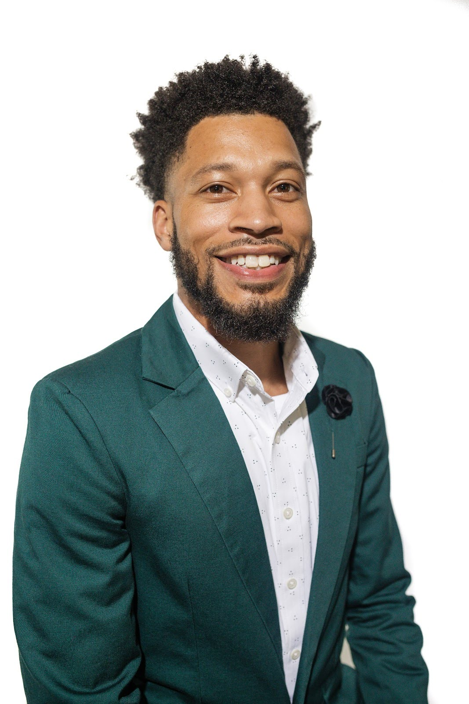

Empowering students to take leadership in their community to increase youth civic engagement in the
democratic process.
MEET OUR STAFF
Quinton Berkompas
State Director
Quinton Berkompas, State Director with For Michigan, is a proud alumni of Washington State University. He started organizing on his college campus advocating for hazing policy reform, basic needs access, and various social justice initiatives. After college, Quinton has organized across the country for various candidates and organizations helping elect John Fetterman in Pennsylvania, Tony Evers in Wisconsin and Schuyler VanValkenburg in Virginia. As the State Director, he is excited to lead the organization to empower students on campus to see organizing as their ability to make change in their communities, just as he learned as a student leader.

LeLann Evans
Organizing Director
LeLann Evans stands as a distinguished and internationally seasoned professional,
renowned for his profound understanding of cultural inclusion and the imperative need
for minority representation. His journey, spanning work, academia, and volunteerism,
has taken him to 17 diverse countries, cultivating a deep comprehension of international
relations and global diversity.
As a visionary leader, LeLann Evans exemplifies a commitment to fostering a more inclusive, informed, and empowered society. His global perspective, coupled with a
dedication to political education, positions him as a transformative force for positive change in communities worldwide.
Camille Jamerson
Operations Director
Camille Jamerson is an established strategist, specializing in corporate
operations and brand management. She is a 2x published author and the
founder of The Camille Company, which is the parent company for CDJ &
Associates, a leading business management consulting firm; and Life at the
Half, an award-winning Gen-X podcast and community.
Camille’s expertise lies in developing intricate strategies, enhancing brand
presence, and seamlessly executing projects across a wide industry spectrum,
including political and public figures, creatives, authors, churches, corporations,
and entrepreneurial ventures. Her mastery in personal and corporate crisis
management, has earned her the moniker of the Midwest's very own "Olivia
Pope”.
She has worked on numerous political campaigns as co-campaign manager,
communications director, and advance manager. In 2018, she served as the
Chief of Staff to a Michigan State Senator and has since worked with numerous
political figures and policy organizations.
Camille's academic accomplishments include a bachelor’s degree in business
administration, along with distinguished achievements from Harvard University
Executive Program as well as Cornell University. Her certifications span
business management, entrepreneurship, and leadership. She is also a
graduate of Arena Academy and Great Lakes Political Academy.
She has been featured in, The Wall Street Journal, USA Today, The New York
Post, Yahoo Travel, Women’s World, HuffPost and Business Insider. Camille
resides in Oakland County Michigan with her husband in their "almost" empty
nest!
Abbie Slate
Deputy State Director
Abbie is the For Michigan Deputy State Director and alum of Central Michigan University. As the former State Director with Rise, she successfully helped rally 22,000+ votes for Gretchen Whitmer's re-election in the 2022 Midterm election, demonstrating her ability to drive youth voter engagement initiatives. Abbie specializes in state-level planning, goal-oriented organizing, and filling gaps where needed. She is deeply committed to youth mobilization and advancing progressive advocacy, and previously helped spearhead efforts to pass the Hunger Free Campus bill in Michigan. Her dedication and commitment to diversity, equity, and inclusion, coupled with hands-on experience in addressing institutional disparities, aligns strongly with For Michigan's core values and she is so excited for 2024 as she she believes in students taking action for what they believe in.